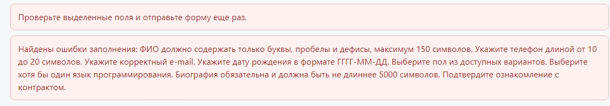

📋 Цель задания
Провести аудит безопасности веб-приложения (анкета разработчика с панелью администратора) и исправить следующие типы уязвимостей:
- XSS (Cross-Site Scripting)
- Information Disclosure (раскрытие информации)
- SQL Injection (SQL-инъекции)
- CSRF (Cross-Site Request Forgery)
- Include уязвимости
- Upload уязвимости
1. 🛡️ Защита от XSS (Cross-Site Scripting)
⚠️ Что такое XSS?
Атака, при которой злоумышленник внедряет вредоносный JavaScript-код в веб-страницу. Код выполняется в браузере жертвы и может украсть cookies, сессии, пароли.
Пример атаки: Пользователь вводит в поле ФИО <script>alert('XSS')</script>. Если данные выводятся без экранирования, скрипт выполнится.
✅ Метод защиты
Функция htmlspecialchars($string, ENT_QUOTES, 'UTF-8') преобразует специальные символы HTML в безопасные сущности:
< становится < > становится > " становится " ' становится ' & становится &
📝 Исправленный код
1. Создана функция экранирования в includes/functions.php:
// Функция для защиты от XSS
function h($string) {
return htmlspecialchars($string ?? '', ENT_QUOTES, 'UTF-8');
}
2. Исправленный вывод в admin.php (таблица пользователей):
<?php foreach ($users as $user): ?>
<tr>
<td><?php echo h($user['id']); ?></td>
<td><?php echo h($user['full_name']); ?></td>
<td><?php echo h($user['email']); ?></td>
<td><?php echo h($user['phone']); ?></td>
<td><?php echo h($user['languages_list'] ?: '-'); ?></td>
</tr>
<?php endforeach; ?>
3. Исправленный вывод в admin_edit.php (форма редактирования):
<input type="text" name="fio" value="<?php echo h($user['full_name']); ?>" required> <input type="text" name="phone" value="<?php echo h($user['phone']); ?>"> <input type="email" name="email" value="<?php echo h($user['email']); ?>" required> <textarea name="bio" rows="4"><?php echo h($user['biography']); ?></textarea>
4. Исправленный вывод в form.php:
<input type="text" name="fio" value="<?php echo htmlspecialchars($values['fio']); ?>"> <input type="email" name="email" value="<?php echo htmlspecialchars($values['email']); ?>"> <textarea name="bio"><?php echo htmlspecialchars($values['bio']); ?></textarea>
Проверка XSS

✅ Результат проверки
При вводе <script>alert('XSS')</script> валидация отклонила ввод. При вводе <b>test</b> текст отобразился как обычный, теги не выполнились. Символы <> преобразуются в <>.
2. 🔐 Защита от Information Disclosure (Раскрытие информации)
⚠️ Что такое Information Disclosure?
Сервер не должен показывать пользователям техническую информацию: пути к файлам, детали ошибок SQL, версии ПО. Это помогает злоумышленнику собрать информацию о системе.
✅ Методы защиты
ini_set('display_errors', '0')— отключает вывод ошибок в браузерini_set('log_errors', '1')— включает запись ошибок в лог-файл- Замена деталей ошибок на общие сообщения: "Ошибка сервера. Попробуйте позже."
📝 Исправленный код
1. В начало каждого PHP-файла (admin.php, admin_edit.php, index.php, login.php) добавлено:
// Information Disclosure: отключаем вывод ошибок
ini_set('display_errors', 0);
ini_set('log_errors', 1);
2. Исправленная обработка исключений в db.php и login.php:
try {
$db = new PDO("mysql:host=localhost;dbname=u82361;charset=utf8", 'u82361', '9967838');
$db->setAttribute(PDO::ATTR_ERRMODE, PDO::ERRMODE_EXCEPTION);
} catch (PDOException $e) {
error_log($e->getMessage()); // Детали в лог
die('Ошибка сервера. Попробуйте позже.'); // Пользователю - общее сообщение
}
3. Исправленная обработка в index.php (блок catch):
catch (PDOException $e) {
error_log($e->getMessage());
$messages[] = '<div class="error">❌ Ошибка загрузки данных</div>';
}
✅ Результат проверки
При временном переименовании таблицы application пользователь увидел сообщение "Ошибка сервера. Попробуйте позже". Детали ошибки (типа "Table 'u82361.application' doesn't exist") записались в лог-файл сервера и не видны пользователю.
3. 🗄️ Защита от SQL Injection (SQL-инъекции)
⚠️ Что такое SQL Injection?
Внедрение SQL-кода через поля формы. Позволяет злоумышленнику читать, изменять или удалять данные в БД.
Пример опасного кода:
// НЕБЕЗОПАСНО - конкатенация переменных в SQL
$db->query("SELECT * FROM users WHERE name = '" . $_POST['fio'] . "'");
// При вводе: Иванов' OR '1'='1
// Получается: SELECT * FROM users WHERE name = 'Иванов' OR '1'='1'
✅ Метод защиты
PDO подготовленные выражения (prepared statements). Переменные передаются отдельно от SQL-кода и никогда не интерпретируются как часть запроса.
// БЕЗОПАСНО - подготовленное выражение
$stmt = $db->prepare("SELECT * FROM users WHERE name = ?");
$stmt->execute([$_POST['fio']]);
// Параметр всегда обрабатывается как ЗНАЧЕНИЕ, а не как SQL-код
📝 Исправленный код
1. Исправленная функция getAllLanguages() в functions.php:
// Было (опасно):
return $db->query("SELECT * FROM programming_language ORDER BY name")->fetchAll();
// Стало (безопасно):
$stmt = $db->prepare("SELECT * FROM programming_language ORDER BY name");
$stmt->execute();
return $stmt->fetchAll();
2. Исправленная функция getUserLanguages():
$stmt = $db->prepare("SELECT pl.name FROM application_language al
JOIN programming_language pl ON al.language_id = pl.id
WHERE al.application_id = ?");
$stmt->execute([$userId]);
3. Исправленный запрос в admin.php (удаление записи):
$stmt = $db->prepare("DELETE FROM application WHERE id = ?");
$stmt->execute([$_POST['id']]);
4. Исправленный запрос в login.php:
$stmt = $db->prepare("SELECT id, login FROM application WHERE login = ? AND password_hash = ?");
$stmt->execute([$login, $pass_hash]);
5. Исправленный UPDATE в admin_edit.php:
$stmt = $db->prepare("UPDATE application SET full_name=?, phone=?, email=?,
birth_date=?, gender=?, biography=? WHERE id=?");
$stmt->execute([$fio, $phone, $email, $birthdate, $gender, $bio, $id]);
✅ Результат проверки
При вводе Иванов'; DROP TABLE application; -- валидация отклонила ввод, так как точка с запятой и дефисы не соответствуют регулярному выражению. Даже если бы ввод прошёл, подготовленное выражение передало бы его как строку, а не SQL-команду.
4. 🔄 Защита от CSRF (Cross-Site Request Forgery)
⚠️ Что такое CSRF?
Атака, при которой злоумышленник заставляет авторизованного пользователя выполнить нежелательное действие на сайте (например, изменить данные или удалить запись).
Как работает атака: Злоумышленник размещает на своём сайте скрытую форму, которая отправляет POST-запрос на уязвимый сайт. Браузер жертвы автоматически добавляет cookies сессии, и сервер выполняет запрос.
✅ Метод защиты
CSRF-токен — уникальный секретный ключ, который генерируется на сервере, встраивается в форму и проверяется при отправке.
📝 Исправленный код
1. Создан файл includes/csrf.php:
<?php
if (session_status() === PHP_SESSION_NONE) {
session_start();
}
function generateCSRFToken() {
if (empty($_SESSION['csrf_token'])) {
$_SESSION['csrf_token'] = bin2hex(random_bytes(32));
}
return $_SESSION['csrf_token'];
}
function verifyCSRFToken($token) {
if (!isset($_SESSION['csrf_token']) || !isset($token)) {
return false;
}
return hash_equals($_SESSION['csrf_token'], $token);
}
function csrfField() {
return '<input type="hidden" name="csrf_token" value="' .
htmlspecialchars(generateCSRFToken(), ENT_QUOTES, 'UTF-8') . '">';
}
?>
2. Добавление CSRF-токена в форму (form.php):
<form action="" method="POST">
<?php echo csrfField(); ?>
<!-- остальные поля -->
</form>
3. Проверка CSRF-токена в index.php (обработка POST):
// Проверка CSRF токена
if (!verifyCSRFToken($_POST['csrf_token'] ?? '')) {
die('CSRF атака обнаружена!');
}
4. Защита формы удаления в admin.php:
<form method="POST" style="display: inline;" onsubmit="return confirm('Удалить?')">
<input type="hidden" name="id" value="<?php echo h($user['id']); ?>">
<input type="hidden" name="csrf_token" value="<?php echo generateCSRFToken(); ?>">
<button type="submit" name="delete" class="btn-delete">🗑️ Удалить</button>
</form>
✅ Результат проверки
Отправка формы без токена через CSRF-тест показала ошибку "CSRF атака обнаружена!". Атака предотвращена. Использование hash_equals() защищает от атак по времени (timing attack).
5. 📁 Защита от Include уязвимостей
⚠️ Что такое Include уязвимость?
Когда сервер подключает файл, путь к которому может контролировать пользователь (например, через GET-параметр). Позволяет злоумышленнику прочитать произвольные файлы на сервере.
Пример опасного кода:
// ОПАСНО - путь из пользовательского ввода include($_GET['page'] . '.php'); // index.php?page=../../../etc/passwd
✅ Метод защиты
Использование только статических (жёстко заданных) путей к файлам. Пользователь не может изменить путь к файлу.
📝 Исправленный код
Все include в проекте используют фиксированные пути:
// В index.php:
include('form.php');
// В admin.php, admin_edit.php:
require_once 'includes/functions.php';
// Все пути жестко заданы, пользовательский ввод не влияет на include
✅ Результат проверки
В проекте используется только include('form.php') и require_once 'includes/...' с фиксированными путями. Динамические include (с параметрами из $_GET или $_POST) отсутствуют. Уязвимость отсутствует.
6. 📤 Защита от Upload уязвимостей
⚠️ Что такое Upload уязвимость?
Возможность загрузить на сервер вредоносный файл (например, PHP-скрипт, который можно выполнить). Злоумышленник может получить полный контроль над сервером.
✅ Метод защиты
В проекте функция загрузки файлов на сервер не реализована. Нет форм с enctype="multipart/form-data", нет обработки массива $_FILES.
📝 Проверка кода
Команда проверки:
grep -r "move_uploaded_file\|is_uploaded_file\|_FILES" .
✅ Результат проверки
Команда grep вернула пустой результат. Функции move_uploaded_file(), is_uploaded_file() и массив $_FILES отсутствуют в коде. Уязвимость отсутствует.
7. 🔒 Дополнительные меры безопасности
Безопасность сессий в login.php:
if ($user) {
$_SESSION['login'] = $user['login'];
$_SESSION['uid'] = $user['id'];
session_regenerate_id(true); // Защита от фиксации сессии
header('Location: index.php');
exit();
}
Защита от перебора паролей (Brute Force) в login.php:
} else {
// Задержка для замедления атак
usleep(rand(500000, 1500000));
header('Location: login.php?error=1');
exit();
}
Валидация входных данных:
// Валидация email
if (!filter_var($_POST['email'], FILTER_VALIDATE_EMAIL)) {
$errors = true;
}
// Валидация даты рождения (18+)
$birthdate = DateTime::createFromFormat('Y-m-d', $_POST['birthdate']);
if (!$birthdate || $birthdate->diff(new DateTime())->y < 18) {
$errors = true;
}